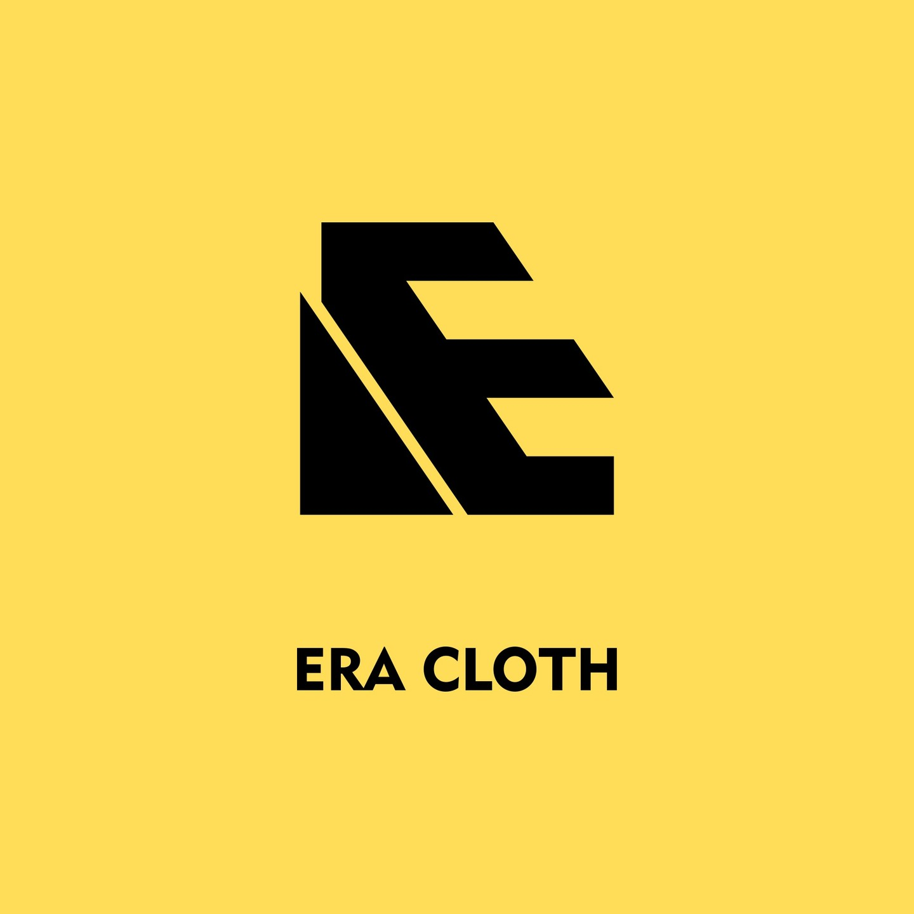
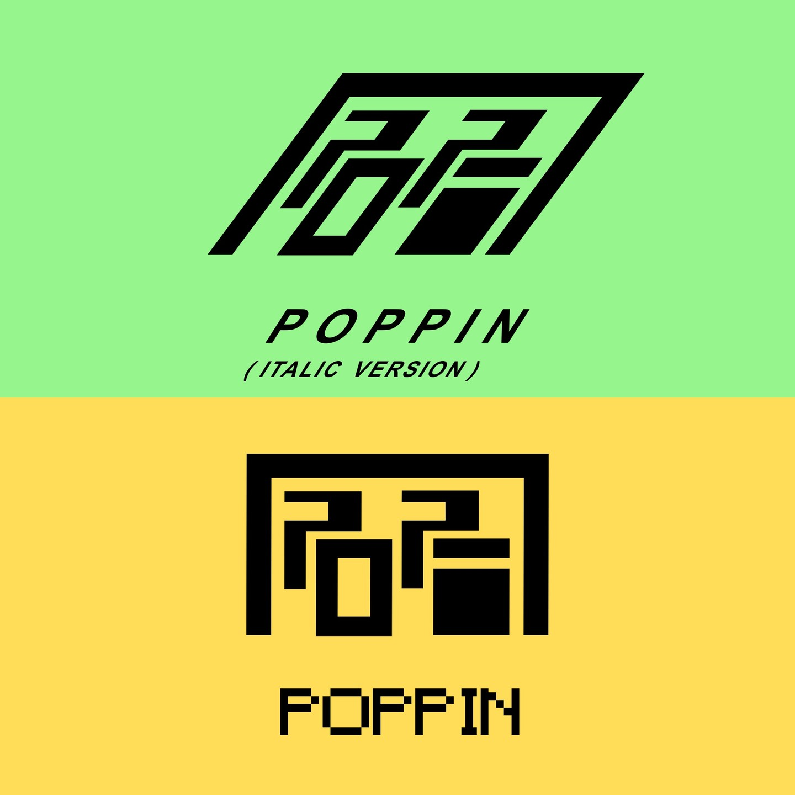

Karya Terpilih
Beberapa proyek logo yang telah saya kerjakan dengan dedikasi.

ERA CLOTH
ERA CLOTH logo bergaya flat geometri, minimalis dan simpel. Gunung dikiri melambangkan brand yang selalu grow up
Lihat Detail →
